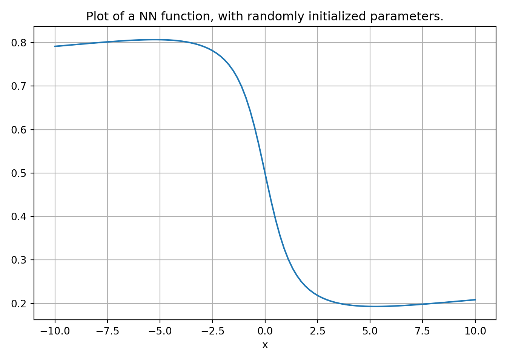
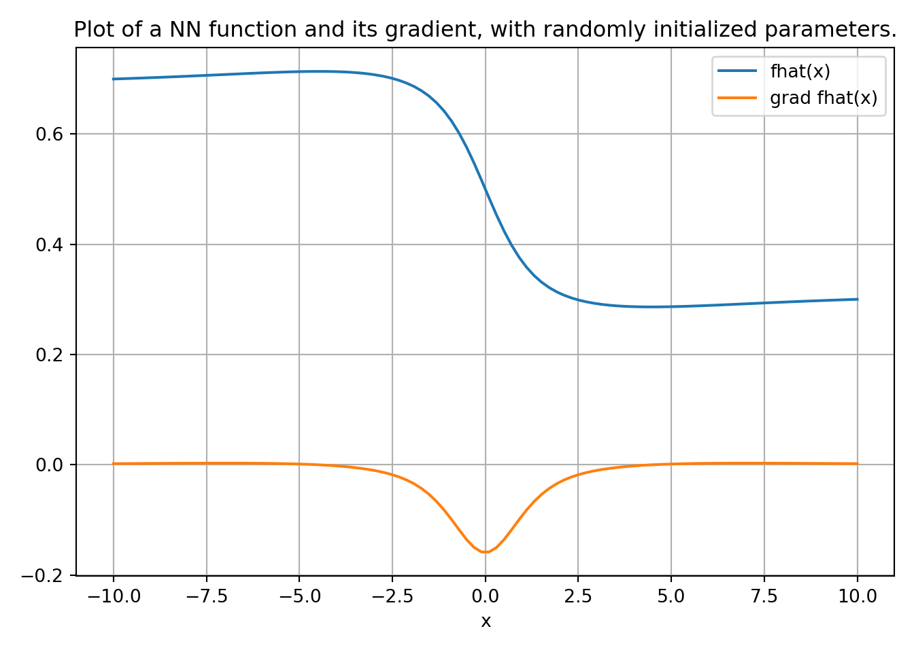

10 Neural Networks
Figure 10.1 illustrates the simplest neural network that consists of an input node \(x\in\mathcal{R}\), a processing node \(f(x)\), and an output node \(y\in\mathcal{R}\). It is essentially a graphical representation of a function \(y:= f(x)\). The function could take arbitrary number of inputs e.g. \(y:= f(x_1, \cdots, x_n )\). Sometimes, the functions are parameterized, for example an affine network with scalar input and output can be defined as \(f(x,\boldsymbol{\rho}):= ax+b\), with parameter \(\boldsymbol{\rho} := \begin{bmatrix} a & b \end{bmatrix}^T\).
In general, we will define a scalar function with inputs \(x_1,\cdots,x_n\) and parameters \(\rho_1, \cdots, \rho_p\) as
\[ y:= f(\boldsymbol{x}, \boldsymbol{\rho}), \]
where \[ \boldsymbol{x} = \begin{bmatrix} x_1 \\ \vdots \\ x_n \end{bmatrix}, \text{ and } \boldsymbol{\rho}= \begin{bmatrix} \rho_1 \\ \vdots \\ \rho_p \end{bmatrix}. \]
Table 10.1 below shows some common functions used in the construction of ANNs, which are also plotted in Figure 10.3.
| Name | Function | Comments |
|---|---|---|
| Affine Function | \(f(\boldsymbol{x},\boldsymbol{\rho}):=\boldsymbol{w}^T\boldsymbol{x}+b, \boldsymbol{\rho}:=\begin{bmatrix}\boldsymbol{w}\\ b\end{bmatrix}\) | Defines a linear network. |
| Sigmoid Function | \(\frac{1}{1+e^{-x}}\) | Equal to \(1\) for \(x\to \infty\) and equal to \(0\) for \(x\to -\infty\) |
| Hyperbolic Tangent Function | \(\tanh(x)\) | Equal to \(1\) for \(x\to \infty\) and equal to \(1\) for \(x\to -\infty\) |
| Rectified Linear Unit (ReLU) | \(f(x) = x^+ = \max(0,x)\) | Clips negative values |

It is possible to use the simple setup, as shown in Figure 10.1, to construct a complex network as shown in Figure 10.2. The nodes \(z_1\) and \(z_2\) represent nodes that hold intermediate values. The output function is then given by \[ y = f_3\left(f_1(x_1,x_2,\boldsymbol{\rho}_1), f_2(x_3,x_4,\boldsymbol{\rho}_2), \boldsymbol{\rho}_3\right), \] a nonlinear function in \(x_1\), \(x_2\), \(x_3\), and \(x_4\); with parameters \(\boldsymbol{\rho}_1\), \(\boldsymbol{\rho}_2\), and \(\boldsymbol{\rho}_3\). With \[ \boldsymbol{x} := \begin{pmatrix}x_1 \\ x_2 \\ x_3 \\ x_4 \end{pmatrix}, \text{ and } \boldsymbol{\rho} \in \mathcal{R}^{p_1+p_2+p_3}:= \begin{pmatrix}\boldsymbol{\rho}_1 \\ \boldsymbol{\rho}_2 \\ \boldsymbol{\rho}_3 \end{pmatrix}, \] we can represent this parameterized nonlinear function as \[y = f(\boldsymbol{x},\boldsymbol{\rho}).\]
Therefore, the neural network can be thought of as a graphical architecture for defining parameterized nonlinear functions by composing simpler parameterized functions, such as those shown in Table 10.1. This network representation is motivated by the neural network in the brain where millions of simple processing nodes, such as the functions in Table 10.1, are densely interconnected. In the ANN parlance, these functions are called activation functions, since their inputs only affect the outputs when they are above a threshold.
Using TensorFlow, we can easily create such a function as shown next
import tensorflow as tf
from keras.models import Sequential
from keras.layers import Dense
fhat = Sequential()
fhat.add(Dense(2, input_dim=1))
fhat.add(Dense(10, activation="tanh"))
fhat.add(Dense(5, activation="tanh"))
fhat.add(Dense(1,activation="sigmoid"))In this code, the parameters are randomly initialized. We can plot this function like a regular function
import numpy as np
x = np.linspace(-10,10,100)
y = fhat(x)
plt.plot(x,y);
plt.xlabel('x')
plt.title('Plot of a NN function, with randomly initialized parameters.');
plt.grid('on')
plt.tight_layout()
We can compute gradient of the function with respect to \(x\) and \(\boldsymbol{\rho}\) using the automatic differentiation capability in TensorFlow.
x = tf.linspace(-10,10,100)
# Evaluate the function with Reverse AD enabled.
with tf.GradientTape() as tape:
tape.watch(x) # gradient w.r.t to this variable
y = fhat(x) # evaluate the function
dydx = tape.gradient(y,x) # compute the gradient
plt.plot(x,y,label='fhat(x)');
plt.plot(x,dydx,label='grad fhat(x)');
plt.xlabel('x')
plt.title('Plot of a NN function and its gradient, with randomly initialized parameters.');
plt.grid('on')
plt.legend()
plt.tight_layout()